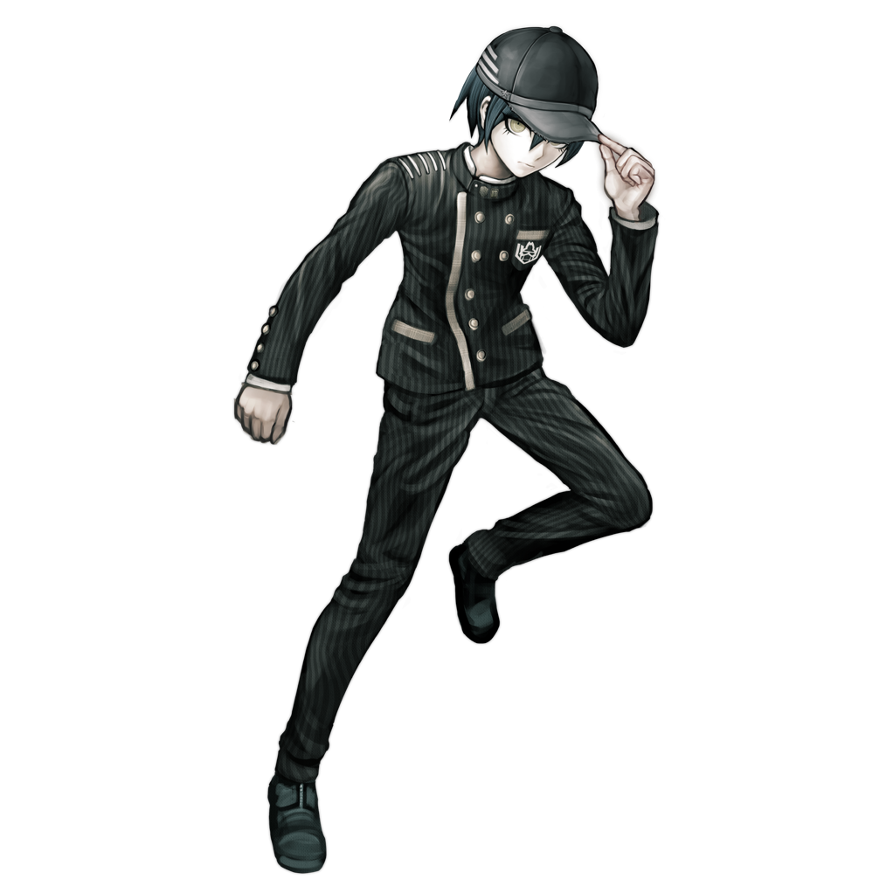

Shuichi Saihara
Shuichi Saihara (最原 終一) is a student in the Ultimate Academy for Gifted Juveniles and a participant of the Killing School Semester featured in Danganronpa V3: Killing Harmony. His title is the Ultimate Detective (超高校級の「探偵」 lit. Super High School Level Detective).
